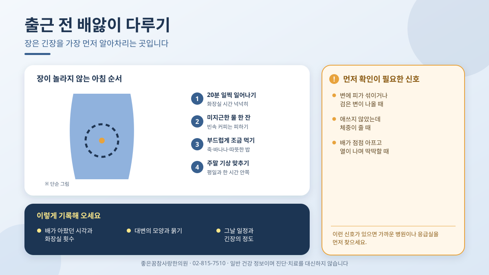

이종호 한의사 감수좋은꿈참사랑한의원 대표원장 (한의사 면허번호 19769)발행 2026-11-26 · 수정 2026-11-26
이 글의 차례
월요일 아침, 알람을 끄고 일어나 세수를 하는데 아랫배가 꾸르륵거립니다. 화장실에 다녀와 옷을 입으면 또 배가 살살 아파 옵니다. 현관에서 신발을 신다가 다시 화장실로 돌아갑니다. 지하철역까지 걸어가는 길에는 가슴이 답답하고, 혹시 가는 길에 또 급해질까 봐 화장실 위치부터 떠올립니다.
진료실에서 이런 이야기를 하시는 분들은 대개 쑥스러워하십니다. 별것 아닌 것 같은데 매주 반복되니 지치고, 주말에는 멀쩡하다가 일요일 저녁부터 배가 묵직해진다고 하십니다. 내시경도 해 봤는데 큰 이상이 없다고 들었다는 분도 많습니다.
이런 불편은 꾀병도, 의지가 약한 것도 아닙니다. 우리 몸에서 장은 마음의 긴장을 가장 먼저 알아차리는 곳 가운데 하나입니다. 긴장하면 배가 아픈 것은 몸이 긴장을 표현하는 아주 흔한 방식입니다.
다만 이 불편이 매주, 매일 반복되면 아침이 두려워지고, 그 두려움이 다시 배를 아프게 하는 고리가 생깁니다. 오늘 글에서는 출근 전 불안과 아침 복통이 왜 함께 오는지, 월요일이 유독 힘든 이유는 무엇인지, 그리고 아침을 조금 편하게 만드는 방법을 정리해 보겠습니다.
출근 전 불안과 아침 복통은 어떤 모습으로 오나요
사람마다 조금씩 다르지만 진료실에서 자주 듣는 모습은 비슷합니다. 한 가지만 오기도 하고 여러 가지가 겹쳐 오기도 합니다.
- 출근 준비를 하며 아랫배가 살살 아프고 화장실을 여러 번 들른다
- 묽은 변을 보고 나면 조금 나아졌다가 다시 꾸르륵거린다
- 아침밥이 넘어가지 않고 속이 메스껍다
- 가슴이 답답하고 숨이 얕으며 목에 무언가 걸린 느낌이 든다
- 일요일 저녁부터 마음이 무겁고 잠이 잘 오지 않는다
- 주말이나 휴가 때는 배가 훨씬 편하다
이처럼 일하는 날과 쉬는 날의 차이가 뚜렷하다면, 배의 불편이 긴장과 깊이 연결되어 있을 가능성이 큽니다.
왜 긴장하면 배가 아플까요
장에는 뇌 다음으로 많은 신경이 모여 있어서 흔히 두 번째 뇌라고도 부릅니다. 뇌와 장은 신경과 호르몬으로 끊임없이 신호를 주고받습니다. 그래서 마음이 긴장하면 그 신호가 곧바로 장에 전해집니다.
긴장하면 몸은 위험에 대비하는 상태가 됩니다. 이때 장의 움직임이 빨라지거나 불규칙해지고, 장이 예민해져 평소라면 느끼지 못할 작은 움직임도 통증으로 느끼게 됩니다. 출근 전 배가 꾸르륵거리고 급해지는 것은 이 반응이 아침마다 반복되는 모습입니다.
아침이라는 시간도 한몫합니다. 자고 일어나면 장은 원래 움직임이 활발해지고, 아침 식사나 커피는 그 움직임을 더 키웁니다. 여기에 출근 긴장이 겹치면 장의 움직임이 한꺼번에 몰려 급한 배앓이로 나타나기 쉽습니다.
한의학에서는 이런 모습을 긴장과 걱정이 소화의 흐름을 누르는 것으로 설명하곤 합니다. 진단명이 아니라 진찰할 때 쓰는 전통적인 표현입니다. 한숨이 잦고 옆구리가 답답한 분, 배가 차고 묽은 변이 잦은 분처럼 몸의 바탕에 따라 살피는 방향이 달라집니다.
왜 월요일 아침이 유독 힘들까요
월요일 아침이 힘든 데에는 몇 가지 이유가 겹칩니다. 첫째는 잠의 리듬입니다. 주말에 늦게 자고 늦게 일어나면 몸의 시계가 뒤로 밀리고, 월요일 아침에는 아직 잠이 덜 깬 몸으로 일어나야 합니다. 시차를 겪는 것과 비슷한 상태가 됩니다.
둘째는 마음의 준비입니다. 주말 동안 내려놓았던 일의 무게가 일요일 저녁부터 한꺼번에 돌아옵니다. 한 주 동안 처리해야 할 일, 만나야 할 사람, 월요일 회의가 머릿속을 채우면서 긴장이 미리 쌓입니다.
셋째는 식사의 변화입니다. 주말에 외식이나 늦은 야식, 술을 즐겼다면 장이 이미 조금 지쳐 있는 상태로 월요일을 맞습니다. 그래서 같은 긴장에도 월요일에 배가 더 예민하게 반응하기 쉽습니다.
비슷해 보이지만 따로 살펴야 할 것
출근 전 배가 아픈 분들 가운데 일부는 과민성 장 증후군의 모습을 보입니다. 배가 자주 아프고 설사나 변비가 반복되며 변을 보면 통증이 조금 나아지는 일이 몇 달 이어진다면, 과민성 장 증후군을 함께 생각해 볼 수 있습니다.
반면 밤에 자다가 배가 아파 깨거나, 변에 피가 섞이거나, 체중이 이유 없이 줄거나, 쉬는 날에도 통증이 계속된다면 긴장 때문이라고만 보기 어렵습니다. 이런 경우에는 소화기내과에서 검사를 먼저 받아 보시길 권합니다.
불안이 배뿐 아니라 하루 전체를 채우고 있다면 그것도 함께 살펴야 합니다. 출근 생각만 해도 숨이 막히고 가슴이 뛰며, 출근하지 못하는 날이 생기고, 두 주 넘게 기분이 가라앉아 있다면 정신건강의학과 상담을 함께 받아 보시는 것이 좋습니다.
학생 때 시험 날 아침마다 배가 아팠던 기억이 있다는 분도 많습니다. 긴장이 배로 오는 체질은 어릴 때부터 이어지는 경우가 흔합니다. 그래서 내 몸이 긴장을 어떤 식으로 표현하는지 알아 두면, 같은 상황이 와도 덜 당황하고 미리 준비할 수 있습니다.
스스로 점검해 보기
아래 질문으로 지금 나의 아침이 어떤지 가볍게 점검해 보세요.
- 배가 아픈 날과 편한 날이 요일이나 일정에 따라 뚜렷이 나뉘나요?
- 아침에 커피를 빈속에 마시나요?
- 주말과 평일의 기상 시각이 두 시간 넘게 차이 나나요?
- 일요일 저녁부터 마음이 무거워지나요?
- 출근길에 화장실 위치를 미리 떠올리게 되나요?
먼저 이렇게 여쭙니다
처음 오시면 저는 대략 이런 순서로 여쭙니다. 미리 생각해 오시면 이야기가 훨씬 수월해집니다.
- 배가 아픈 시각과 위치, 이어지는 시간은 어떠신가요?
- 대변은 하루 몇 번, 어떤 모양으로 보시나요?
- 주말이나 휴가 때는 어떠신가요?
- 아침 식사와 커피는 어떻게 드시나요?
- 잠드는 시각과 깨는 시각, 주말의 차이는 어떠신가요?
- 요즘 일이나 관계에서 마음을 크게 쓰는 일이 있나요?
일상에서 먼저 해 볼 수 있는 것
아침의 배앓이를 줄이려면 아침 시간에 여유를 만들고, 장이 놀라지 않게 순서를 정해 주는 것이 도움이 됩니다. 아래 가운데 두세 가지부터 시작해 보세요.
- 평소보다 20분 일찍 일어나 화장실 갈 시간을 넉넉히 두기
- 일어나자마자 미지근한 물 한 잔 천천히 마시기
- 빈속에 커피 대신 따뜻한 물이나 보리차로 시작하기
- 아침은 죽, 바나나, 따뜻한 밥 조금처럼 부드럽고 적게 먹기
- 출근 준비를 하며 숨을 길게 내쉬는 호흡을 몇 번 하기
- 주말에도 기상 시각을 평일과 한 시간 안쪽으로 맞추기
여유가 생기면 긴장도 줄어듭니다. 급하게 서두르는 아침은 그 자체로 긴장을 키웁니다. 전날 밤에 옷과 가방을 미리 챙겨 두면 아침의 할 일이 줄어 마음이 한결 가벼워집니다.
배를 따뜻하게 해 주는 것도 도움이 됩니다. 아침에 배가 차갑게 느껴진다면 얇은 내복이나 배를 덮는 옷을 챙기고, 찬 음료와 찬 음식은 아침에 피하시길 권합니다. 배에 손을 얹고 시계 방향으로 천천히 문질러 주는 것도 좋습니다.
장을 편하게 하는 하루의 식사
아침뿐 아니라 하루의 식사 흐름도 장의 예민함에 영향을 줍니다. 점심을 급하게 먹고, 저녁은 늦게 많이 먹고, 밤에 야식까지 더해지면 장은 쉴 틈이 없습니다. 그만큼 다음 날 아침에 더 예민하게 반응하기 쉽습니다.
끼니는 비슷한 시각에, 천천히 꼭꼭 씹어 드시는 것이 기본입니다. 기름지고 매운 음식, 찬 음료, 술은 장을 쉽게 자극하니 평일에는 조금 줄여 보세요. 특정 음식을 먹은 날 배가 유난히 불편하다면 기록에 함께 적어 두시면 도움이 됩니다.
유제품이나 밀가루, 콩류처럼 사람에 따라 가스가 잘 차는 음식도 있습니다. 모든 것을 한꺼번에 끊기보다 의심되는 것 하나를 2주 정도 줄여 보고 몸의 반응을 살피는 방식이 부담이 덜합니다.
일하는 중에 긴장이 올라올 때
배앓이는 출근 전에만 오지 않고, 회의나 발표를 앞둔 낮에도 찾아옵니다. 이럴 때는 자리에서 잠깐 일어나 화장실이나 복도를 걸으며 숨을 길게 내쉬어 보세요. 몇 분의 틈이 몸의 긴장을 한 단계 낮춰 줍니다.
어깨와 배에 힘이 들어가 있는지 알아차리는 것도 도움이 됩니다. 긴장하면 어깨가 귀 쪽으로 올라가고 배가 단단해집니다. 어깨를 한 번 끌어올렸다가 툭 떨어뜨리고, 배를 부드럽게 풀어 주는 동작만으로도 장이 조금 편안해지는 분이 많습니다.
일요일 저녁을 다루는 법
월요일 아침의 불편은 대개 일요일 저녁에 시작됩니다. 그래서 일요일 저녁을 어떻게 보내는지가 월요일 아침을 바꾸는 열쇠가 되기도 합니다.
일요일 저녁에는 다음 주에 할 일을 종이에 적어 보세요. 머릿속에서 맴돌던 걱정이 종이 위로 옮겨 가면 마음이 조금 가벼워집니다. 다 적었다면 그 종이는 덮어 두고, 남은 저녁은 편안한 일로 채우세요.
일요일 저녁 식사는 가볍게, 너무 늦지 않게 드시고, 술과 기름진 야식은 피하시길 권합니다. 잠드는 시각도 평소와 비슷하게 맞추면 월요일 아침의 몸이 한결 덜 놀랍니다.
일요일 낮에 햇빛을 보며 걷거나 가볍게 몸을 움직이는 시간도 도움이 됩니다. 몸을 적당히 쓰면 밤잠이 조금 더 깊어지고, 그만큼 월요일 아침의 몸도 덜 무겁습니다.
출근길을 편하게 만드는 작은 준비
출근길에 배가 급해질까 걱정되면 그 걱정이 다시 배를 아프게 합니다. 출근길에 들를 수 있는 화장실 몇 곳을 미리 알아 두면, 그것만으로도 마음이 놓여 오히려 덜 급해지는 분이 많습니다.
조금 이른 시각에 출발해 덜 붐비는 차를 타는 것도 방법입니다. 사람이 빽빽한 차 안은 긴장을 키우기 쉽습니다. 이어폰으로 좋아하는 음악을 듣거나, 창밖을 보며 숨을 길게 내쉬는 시간을 가져 보세요.
한의원에서 함께 살필 수 있는 경우
- 출근 전이나 긴장한 날마다 배가 아프고 묽은 변을 보는 경우
- 아침 입맛이 없고 속이 메스껍거나 더부룩한 경우
- 가슴이 답답하고 한숨이 잦으며 목에 무언가 걸린 느낌이 드는 경우
- 일요일 밤마다 잠이 얕고 자주 깨는 경우
- 배가 차고 손발이 차며 찬 음식을 먹으면 탈이 나는 경우
좋은꿈참사랑한의원에 오시면 먼저 아래 '먼저 확인이 필요한' 신호가 없는지부터 봅니다. 그다음 맥을 짚고 배를 직접 만져 보며, 잠과 대변, 긴장의 흐름을 함께 여쭙니다.
진찰한 내용을 바탕으로 아침 루틴에서 바꿔 볼 것 하나와 함께 침, 한약 상담 가운데 지금 상태에 맞는 것을 정합니다. 한약을 상의할 때는 드시는 약을 모두 확인하고 신중하게 정합니다. 처방받은 약은 상의 없이 멈추지 않습니다.
소화기내과 검사가 필요해 보이면 먼저 안내하고, 불안이 크다면 정신건강의학과 상담을 함께 권하기도 합니다. 한의원 진료는 그런 진료와 나란히 가며 배와 잠, 긴장을 함께 살피는 자리입니다.
직장에서의 어려움이 오래 이어지고 있다면 그 이야기도 편하게 꺼내 주세요. 해결책을 드리기는 어렵더라도, 어떤 상황에서 몸이 가장 크게 반응하는지 함께 찾아보는 것만으로도 다음 걸음이 보이기도 합니다.
이렇게 기록해 오시면 상담이 쉬워집니다
2주 정도만 짧게 적어 보세요. 휴대폰 메모에 한 줄씩이면 충분합니다.
- 배가 아팠던 시각과 화장실 간 횟수
- 대변의 모양과 묽기
- 그날 아침 먹은 것과 커피
- 전날 잠든 시각과 그날 일어난 시각
- 그날 예정되어 있던 일과 긴장의 정도
기록을 나란히 보면 배가 아픈 날과 편한 날의 차이가 보이기 시작합니다. 그 차이 하나를 다음 주 아침에 바꿔 보는 것이 다음 걸음이 됩니다.
조금 덜 두려운 아침을 위해
출근 전 배앓이는 몸이 긴장을 정직하게 알려 주는 신호입니다. 그 신호를 미워하기보다, 아침에 조금 더 여유를 주고 장이 놀라지 않게 순서를 정해 주면 아침이 조금씩 덜 두려워집니다.
이번 주에는 20분 일찍 일어나 미지근한 물 한 잔부터 시작해 보세요. 다음에 오시면 일주일의 아침 기록부터 함께 펼쳐 보겠습니다.
이런 증상은 먼저 확인이 필요합니다
- 변에 피가 섞이거나 검은 변이 나오고, 애쓰지 않았는데 체중이 줄어드는 경우
- 배가 점점 심하게 아프고 열이 나며 배가 딱딱하게 굳는 경우
이런 신호가 있으면 한의원보다 가까운 병원이나 응급실을 먼저 찾으세요.
함께 읽으면 좋은 글
- 아침마다 배가 꾸르륵거리고 급하게 화장실을 찾게 되는 설사형 과민성 장은 어떻게 살피나요?
- 배가 자주 아프고 설사·변비가 반복되는 과민성 장 증후군은 어떻게 살피나요?
- 일요일 저녁만 되면 출근 걱정에 가슴이 답답하고 잠이 안 올 때는 어떻게 하나요?
- 걱정이 꼬리를 물고 멈추지 않는 범불안(불안장애)은 어떻게 살피나요?
- 불안한 마음과 몸이 긴장한 느낌은 어떻게 나눠서 이야기하나요?

여쭙는 것
- 배가 아픈 시각과 위치, 이어지는 시간은 어떠신가요?
- 대변은 하루 몇 번, 어떤 모양으로 보시나요?
- 주말이나 휴가 때는 어떠신가요?
생활에서 해 볼 것
- 평소보다 20분 일찍 일어나 화장실 갈 시간을 넉넉히 두기
- 일어나자마자 미지근한 물 한 잔 천천히 마시기
- 빈속에 커피 대신 따뜻한 물이나 보리차로 시작하기
한의원에서 함께 살필 것
- 출근 전이나 긴장한 날마다 배가 아프고 묽은 변을 보는 경우
- 아침 입맛이 없고 속이 메스껍거나 더부룩한 경우
- 가슴이 답답하고 한숨이 잦으며 목에 무언가 걸린 느낌이 드는 경우
먼저 확인이 필요한 신호
- 변에 피가 섞이거나 검은 변이 나오고, 애쓰지 않았는데 체중이 줄어드는 경우
- 배가 점점 심하게 아프고 열이 나며 배가 딱딱하게 굳는 경우
한눈에 보는 표
| 구분 | 핵심 |
|---|---|
| 여쭙는 것 | 배가 아픈 시각과 위치, 이어지는 시간은 어떠신가요? 대변은 하루 몇 번, 어떤 모양으로 보시나요? |
| 생활에서 해 볼 것 | 평소보다 20분 일찍 일어나 화장실 갈 시간을 넉넉히 두기 일어나자마자 미지근한 물 한 잔 천천히 마시기 |
| 한의원에서 함께 살필 것 | 출근 전이나 긴장한 날마다 배가 아프고 묽은 변을 보는 경우 아침 입맛이 없고 속이 메스껍거나 더부룩한 경우 |
| 먼저 확인이 필요한 신호 | 변에 피가 섞이거나 검은 변이 나오고, 애쓰지 않았는데 체중이 줄어드는 경우 배가 점점 심하게 아프고 열이 나며 배가 딱딱하게 굳는 경우 |
자주 묻는 질문
내시경에서 이상이 없다는데 왜 배가 아플까요?
장은 긴장에 예민하게 반응하는 곳이라, 검사에서 큰 이상이 없어도 긴장할 때 움직임이 빨라지고 통증을 더 크게 느낄 수 있습니다. 진찰에서는 잠, 식사, 긴장의 흐름을 함께 살핍니다.
아침에 커피를 마셔도 되나요?
커피는 장의 움직임을 키울 수 있어서 아침 배앓이가 잦다면 빈속에는 피하시길 권합니다. 마신다면 아침을 조금 먹은 뒤 드셔 보세요.
주말에 늦잠을 자면 월요일이 더 힘든가요?
주말과 평일의 기상 시각 차이가 크면 몸의 시계가 밀려 월요일 아침이 더 힘들어지기 쉽습니다. 주말에도 평일과 한 시간 안쪽으로 맞춰 보세요.
출근길에 갑자기 급해질까 봐 걱정돼요.
출근길에 들를 수 있는 화장실을 미리 알아 두면 마음이 놓여 오히려 덜 급해지는 분이 많습니다. 조금 일찍 출발해 여유를 두는 것도 도움이 됩니다.
지사제를 먹어도 되나요?
가끔 급할 때 쓰는 것은 약사나 의사와 상의해 정하시면 됩니다. 매일 반복된다면 약에 기대기보다 원인을 함께 살펴보는 것이 좋습니다.
좋은꿈참사랑한의원은 재진 때 지난번 이야기부터 이어서 여쭙니다. 진료시간과 예약은 오시는 길에서 확인하세요.
어디서 상담받을 수 있나요?
좋은꿈참사랑한의원은 서울 동작구 만양로2길 2 신성빌딩 3층·5층(서울 동작구 상도동, 7호선 상도역 3번 출구 근처)에 있습니다. 한의사 3명(이종호 대표원장, 조영기 수석진료원장, 정원영 진료원장)이 진료합니다. 진료시간은 평일 09:30~20:00(점심 13:00~14:00), 토·일·공휴일 09:30~15:00이며, 방문 전 전화로 확인을 권합니다. 예약은 네이버 예약, 카카오톡 상담, 전화 02-815-7510로 받습니다.
이 글은 일반적인 건강 정보이며 개인의 진단이나 치료를 대신하지 않습니다. 증상이 있거나 복용 중인 약이 있다면 진료를 통해 확인하세요. 치료 효과는 개인마다 다를 수 있습니다.
작성 기준: 일반적으로 알려져 있는 건강 정보를 참고해 정리했습니다(대표원장 감수). 증상 기록은 1~2주 동안 하루 1회, 비슷한 시간에 적어 오시면 지난 상태와 비교하기 쉽습니다.